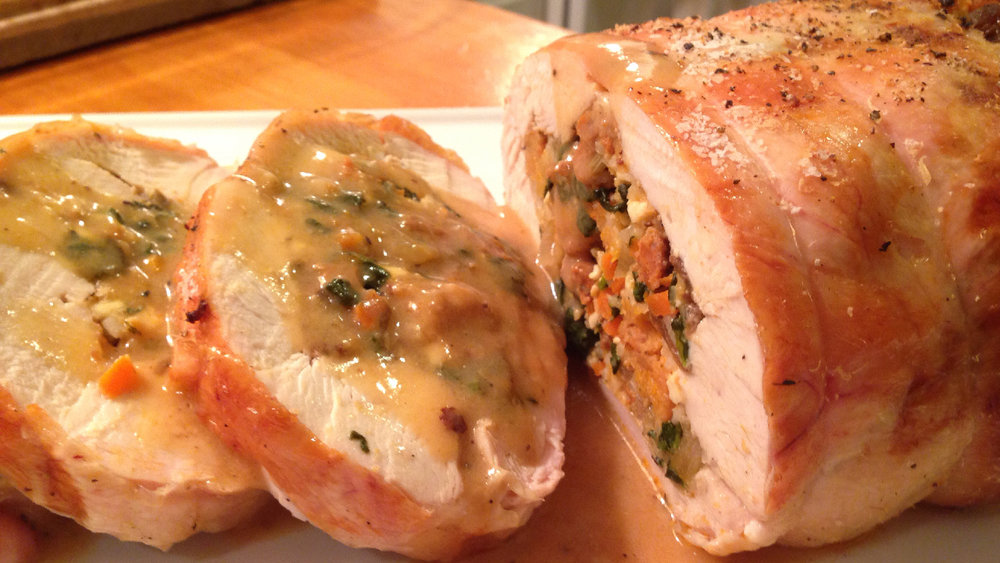

Chicken Galantine
Homepage

Description
Chicken galantine is a whole chicken that has beheaded, deboned, and usually stuffed with rice, spinach and mushrooms. The chicken is then tied, pan-fried until crispy and finished off in the oven.
Ingredients
- 1 whole chicken
- 500 gram raw spinach
- 500 gram mushroom
- 500 gram rice
- Salt and pepper
Steps
- Preheat oven to 350 Fahrenheit
- Debone chicken and remove head
- Cook spinach, rice and mushroom separately from each other
- Stuff chicken with spinach, rice and mushroom
- Tie with butcher's twine
- Heat up pan with oil and pan-fry chicken until skin is crispy
- Place chicken on oven pan until chicken reaches 165 Fahrenheit
- Remove and cut into 1-inch slices
- Serve